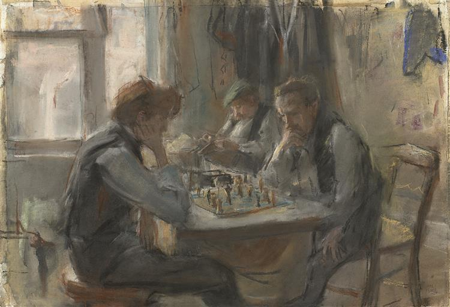

Chess is a very competitive game. Although it's very frustrating when u lose, it can be extremely rewarding when you win, the feeling you get from winning is like nothin else you can get from anywhere and there's very little luck involved, every mistake you make, you know it is YOU who made it. You can learn about and improve yout game and rating and you start to win easier and it gets very addictive, it becomes a part of your life, you find yourself thinking about it when you are free. At first you convince yourself that it is just a game and as you start playing it becomes more than just a game, it becomes some place in your brain you go to train or something. I'm a beginner at chess yet i fully admit, i'm obsessed about the game, chess is fascinating and i think every single human have to at least learn how to move the pieces and win their first game and experience this awesome game we ,humans, have come up with.